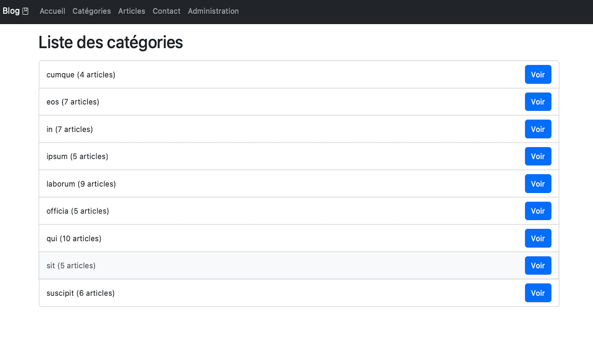
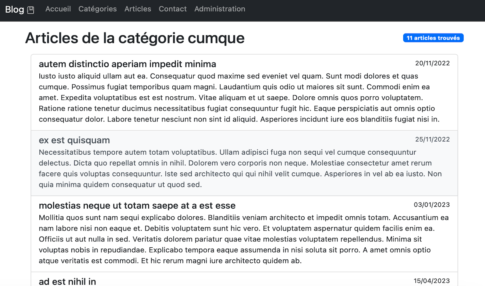
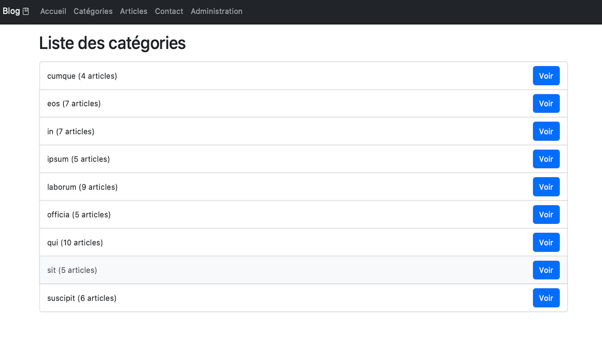
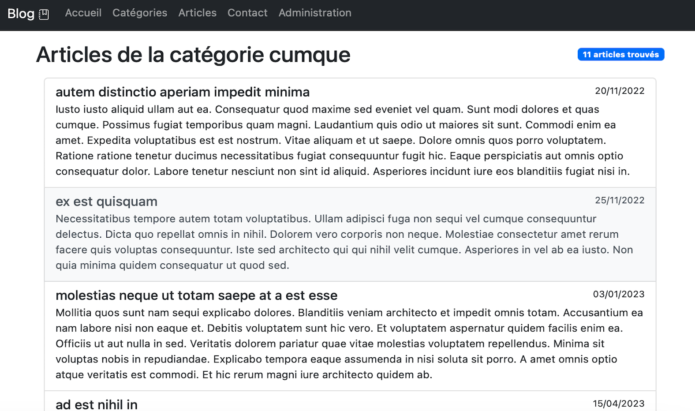

Blog
2e année de BTS Informatique
Description du projet
Ce projet est un blog permettant d'organiser des articles par catégories. Il propose également l'ajout d'articles et de commentaires pour une gestion interactive du contenu.


 





Outils utilisés
- Frameworks : Symfony, Bootstrap
- Langages : PHP, Twig, HTML, CSS